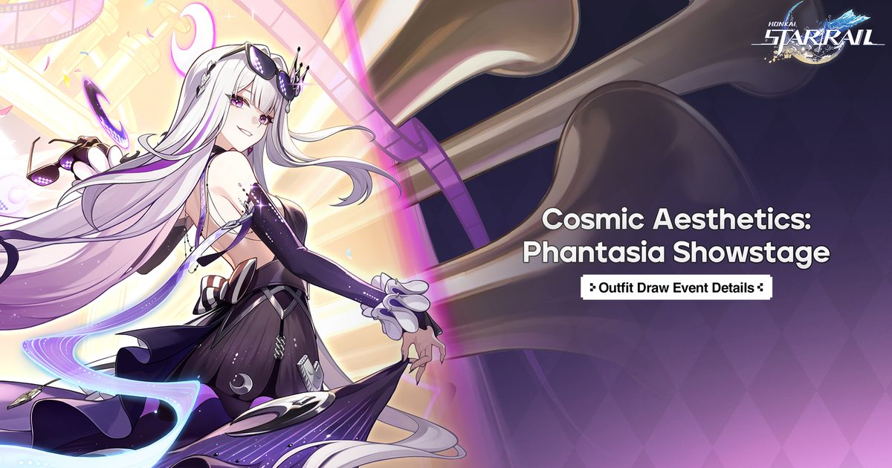

2026-10-31 · 版本深读
10 月 30 日晚 19:30，《崩坏：星穹铁道》4.7 版本前瞻特别节目播完。 这档节目有个不太像官方会起的名字——《阿哈之夜》。 版本名叫「此刻，将群星付之一笑」，11 月 11 日上线。 公布的内容里，最硬的一条是：欢愉星神「阿哈」成为这款游戏历史上第一个可以抽取、可以上场的星神，五星、量子属性、欢愉命途。 四年多来，星神一直是崩铁世界观里那层只能被提及、不能被触碰的天花板——记忆、丰饶、巡猎、存护，它们写在文本里，写在命途说明里，也写在角色们发誓的台词里，但从来没有一个能被放进你的队伍。 现在这层天花板被打穿了，而且是以标价的方式打穿的。

星神★阿哈是 4.7 唯一的新角色。她的 UP 池不像常规新五星那样只占前 21 天，而是从 11 月 11 日版本开启一直开到版本结束，整整一个 4.7。 上半复刻银狼 LV.999、火花、爻光；下半复刻黄泉、丹恒·饮月、景元。 主线推进到节点星船，迎战「贪欢的神颅」，收束点星船这条从 4.6 就开始的弧线；通关送四星欢愉光锥「在世界尽头相会吧！」。 新遗器两套——「神的瞬息欢愉」和「亚空异容所」；货币战争开第二赛季「入画奇航」，官方的说法是 comprehensive overhaul 而不是轻度更新； 版本活动是「剧场版绒绒号：欢闹厨房」和「星际和平宴会：成名之路」；阿哈的皮肤「群星乐透」放进「幻乐秀场」抽取。
真正的新东西只有一件：奇缘星魂（Affinitive Eidolon）。 它是一条独立于命座之外的养成线，首发只对黄泉、丹恒·饮月、景元三个人开放，解锁的是新能力、新动画和新美术。 而玩家在 11 月 11 日登录时可以免费在这三个人里任选一个本体，外加对应的一枚奇缘星魂，同时拿到 20 张星轨专票、一个旅伴金灵和开拓者时装「黄紫风尚」。 另外两位角色的奇缘星魂，需要消耗星轨专票或时尚邀请函才能拿到——也就是说，三个都能凑齐，但不是白送。
这条看起来是「设定膨胀」，其实是一次很克制的选择。 星神是崩铁世界观的最高位阶，把任何一个塞进卡池，都会稀释这个词的分量。 但阿哈不一样——阿哈的设定本身就是「破坏规则」。欢愉命途的整条逻辑就是恶作剧、反讽、把严肃场面拆掉。 换句话说，米哈游不是自己打破第四面墙，而是雇了一个本来就该打破第四面墙的角色来打破它。 这在叙事上叫「授权」：破墙这件事由阿哈执行，所以世界观没有崩，崩的只是玩家对「星神不可触碰」的预期。
还有一个细节能佐证这个判断：阿哈的技能会给队里的欢愉角色单独发增益，并且在机制上把他们「封为令使」（Emanator）。 「令使」一直是崩铁里一个稀缺的身份标签，是角色与星神之间的专属关系；现在它变成一个可以在战斗中批量授予的 buff 名。 这是把设定术语降格为资源——爽是真爽，但也是一个信号：当最高级的身份可以被批量发放，它离变成数字也就不远了。 前瞻实机里最扎眼的一刀是削减敌方血量上限，这类机制通常只有在新体系的核心位上才会出现。
这一条才是 4.7 最值得写下来的结构变化，比阿哈本身更重要。 二游处理「老角色退环境」通常只有两条路：要么加一个更高的命座上限（把价格天花板整体抬上去），要么出一个同名 SP 新角色（把老资产作废）。 前者的代价是舆论——玩家会立刻算出「满命成本又涨了」； 后者的代价是信任——你刚抽满的角色被宣布过期。
奇缘星魂是第三条路：不碰命座，另开一个容器。 它不叫「命座 7」，它叫一个全新的名字，解锁的是「新能力 + 新动画 + 新美术」这个组合。 名字换了，玩家就没办法直接把它放进「又一个涨价」的算式里； 而动画和美术的加入，又给了它一个命座给不了的东西——情感上的新鲜感。 黄泉的挥刀、饮月的变身、景元的神君，这些是老角色最被记住的瞬间；给它们做新的演出，比给它们加 15% 伤害更能让人愿意再掏一次钱。
首发名单也选得很准。黄泉、丹恒·饮月、景元——这三位恰好是「曾经的版本答案、如今已经退环境」的代表。 黄泉是 2.x 时代最强势的主 C，饮月是开服一年的数值标杆，景元是召唤体系的第一次繁荣。 他们共同的特点是：几乎每个老玩家手里都有一个，而且都已经很久没上场了。 给这三个人开奇缘星魂，不是怀旧，是一次精准的旧资产再定价——用最低的边际成本，把已经被抽过很多次的角色重新变成一个「值得再投入一次」的对象。
| 老角色处理方式 | 玩家读到的信息 | 代价 |
|---|---|---|
| 直接加强数值（老角色增强） | 「我以前没白抽」 | 不产生新收入，一次性的善意 |
| 提高命座上限（命座 7） | 「满命成本又涨了」 | 舆论风险最高，价格天花板被整体抬高 |
| 出同名 SP / 新形态 | 「我刚抽的作废了」 | 信任成本，老角色彻底闲置 |
| 奇缘星魂（4.7） | 「老角色拿到了新演出」 | 条目一旦常态化，就是事实上的第二条收费命座线 |
崩铁的新五星常规是「占前 21 天、下半让位给复刻」。阿哈这次开满整个版本，等于主动放弃了首日冲刺那波 FOMO。 这在商业上不是不做账，是换了算法：与其把所有人逼在第一天抽，不如让整个版本的人都处在「随时可以抽」的状态里，把决策期从三天拉长到六周。 代价是首日流水曲线会平，好处是版本总抽数不见得少，而且能接住中途回流的人。
还有一层容易被忽略的原因：11 月 11 日这个位置很挤。 《原神》7.2 在 11 月 4 日先走一步，绝区零与星铁的联动也已经在路上。 把阿哈的池子拉长，等于把自己的冲刺期让开，不和自家产品在同一个星期抢同一批预算。 米哈游现在开始在自己的产品矩阵里互相避让，这件事本身比阿哈进池更值得记一笔。
过去一周，B 站和微博上滚了一圈「4.7 免费送阿哈」的说法，连「送月卡」「变猫娘」的 flag 都立好了。 这个误会不是凭空来的——官方从 10 月初开始连载一档叫「阿哈的赠礼」的六话内容： 10 月 2 日第一话发纪念道具「这样就能把你捧在手心啦」，10 月 17 日第四话发头饰「『欢愉』代理人」， 10 月 22 日第五话发旅伴金灵×1，10 月 26 日第六话发开拓者时装「黄紫风尚」。 每一话都挂着阿哈的名字，但没有一话的内容是阿哈本人。 玩家把「阿哈送东西」听成了「送阿哈」，一批标题党视频又把这个读法放大了一圈。
前瞻结束后答案落地：阿哈不送，她是整版的 UP；4.7 确实送限定五星，但送的是黄泉、饮月、景元三选一。 这件事有意思的地方在于，它是一次由命名造成的信任事故，而制造这起事故的恰恰是最懂阿哈的那批人。 阿哈式玩笑第一次真正落到了营销层，效果是一次全网规模的听错。 同一串操作里还有三个兑换码：NEVERGONNAGIVE / NEVERGONNAMAKE / AHABLESSYOU（中文版是「永远不会抛弃你」「永远不会欺骗你」「星神阿哈祝福你」）—— 这是 Never Gonna Give You Up 的 Rickroll 梗，官方在官方渠道玩了。 而这三个码在 10 月 31 日 23:59 失效，比版本上线早了整整十一天：还没等到阿哈，码先死了。
我们的观察：这次更新最值得记住的不是「星神能抽了」，而是米哈游在处理「老角色怎么办」这个二游终极难题时，给出了一个此前没人这么做的答案。 在此之前，几乎所有二游都只能在「加强」「加命座」「出 SP」三者之间选，且三者各自带一个明确的副作用。 奇缘星魂把副作用从「价格」转移到了「新鲜感」上——它不涨你已有的东西的价格，它卖你一个新的东西。 这个转移很聪明，也很值得警惕。
我们的观点：把阿哈放进卡池是一次「体面的破墙」，而体面的代价是它必须一直体面下去。 阿哈之所以能被抽，是因为她的设定允许她不严肃；一旦下一个星神也进了池，而那个星神没有这层豁免，崩铁的世界观就会开始漏水。 所以我们的判断是：阿哈很可能是唯一一个可抽星神，而不是第一个。 这次更像一次限定事件，不是一条产品线的开端。
我们的案例对比：把 4.7 放回到崩铁自己的历史里看会更清楚。 此前的联动是把外部 IP 的角色请进来，代价是设定边界的一次性让渡，做完就收回； 而这次是把自己世界观的最高层拆下来卖。前者是横向扩张，后者是纵向开采。 横向扩张可以反复做，纵向开采只能做有限次——因为它挖的是自己的地基。
我们的实验：11 月 11 日之后我们打算做两个测量。 一是「奇缘星魂的战力增量」：记录同一套队伍在拿到 EX 星魂前后的深渊满星层数差。 如果这个差值小于半层，说明它卖的是演出和收藏，那它是良性的； 如果大于一层，说明它已经变成了「不买就掉队」的第二条命座线，那就该警惕了。 二是「阿哈离开欢愉队的折损率」：把她放进一支非欢愉队伍，对比同练度主 C 的通关轮次。 折损越小，说明「体系拐」这个定位是保守说法；折损越大，说明不玩欢愉的人这次其实是陪跑。
我们的评分：版本内容密度 8.8／商业化坦诚度 7.0 → 综合 8.0。 给到 8.8 是因为 4.7 一次塞进的东西确实多：一个新体系核心位、一条全新养成线、一个免费限定五星、货币战争的全面重做、两套新遗器，而且主线收束了一整条弧线。 扣到 7.0 是因为它在最该说清楚的地方保持了沉默——奇缘星魂的获取比例、后续开放节奏、阿哈离开欢愉队的实际折损，这三项至今没有官方口径； 而「免费送阿哈」这起乌龙，说明官方在阿哈这套玩笑里玩得有点过，过到了让一部分玩家误会自己会拿到什么。
分三类人说：
最后提醒一件小事：三个兑换码今晚（10 月 31 日）23:59 失效，比版本早十一天。 别把它当成上线那天的事。 以及阿哈的皮肤「群星乐透」在「幻乐秀场」奖池里，不是登录送的那套开拓者时装——想抽皮肤的，别把皮肤预算和角色预算混在一起算。